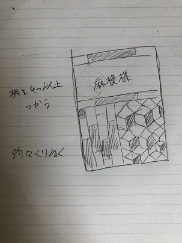
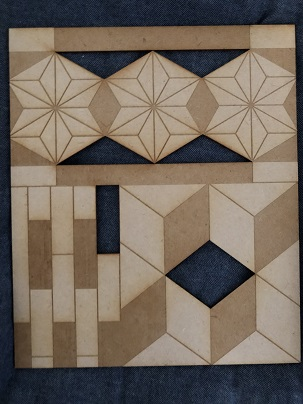

タイトル：寄木の壁掛け
スケッチ

作品

作品ファイル
作品ファイル
作品の説明
この作品は箱根の伝統工芸の寄木細工を模したものです。
所々を刳り抜くことで色を増やし、視覚的に楽しめるようになっています。
額縁に容れて飾ろうと思います。
何故この作品を作ったか。
私がこの作品を作ろうと考えたのは、班での意見交換の際、キーワードで「伝統」という言葉が出た時に
昔、箱根で行った寄木細工の体験を思いだし、寄木細工なら本能レベルに訴えかける作品が作れると思ったからです。
箱ではなく壁掛けにした理由は、自室のかｂe壁が寂しいことと、寄木細工で箱を作るのは普通で面白味が無いと思ったからです。